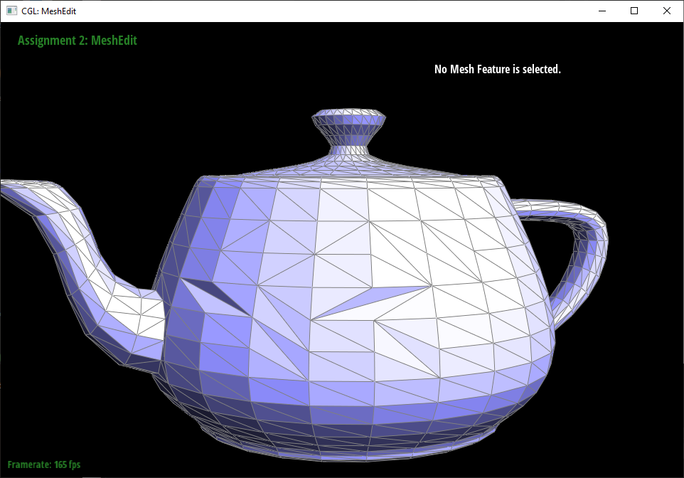

Overview
This project is about the altering of mesh geometry and different methods and techniques to do so. We take starting ideas like who do we geometrically portray a line and build on it in order to get 3D meshes of triangles that we can edit in different ways. After doing this project I feel a lot more experienced with how the implementation for the ideas given in lecture would go as well as comfortable with the material itself. I always used Adobe Illustrator but I never understood how the control points actually worked and I now have new appreciation for the way the application works as well as a better understanding of how to manipulate the curves.
Part 1
The de Casteljau Algorithm for bezier curves is essentially a recursive corner cutting algorithm that eventually lands on a point via linear interpolation. By changing the value of t we are able to find different points on the curve. The algorithm takes n points and takes a linear interpolation between each pair of points to get n-1 points. You then continue taking linear interpolations of the same t-value until you are left with only 1 point which will be on the bezier curve. My implementation of this algorithm was only in one step, from some j points to j-1 points. It would then return these control points in a vector of 2D vectors.
Part 2
Bezier surfaces are very similar to points in that the surfaces are just a bezier curve of bezier curve points. For n^2 control points: First we take the first n control points and calculate the bezier curve via de Casteljau. Take the next n points and do the same thing until you run out of points (a total of n times) then for each line take some t value across all of those lines and run de Casteljau again to get a point that lies on the final surface. The n points on the lines act as control points to get another bezier curve and as we move along them we get more and more curves. We can also think of it as a curve that sweeps out a plane as we move along the n lines in the opposite direction.
Part 3
Area-weighted vertex normals are fairly simple. For every vertex in the mesh you take the normals of all the faces next to it and weight them by their area and sum them together and finally, normalize. This is exactly the implementation I went with, starting with a vertex I iterated over all the faces and used the cross product of the two vectors from the starting vertex to the other two in the triangle to find the area of the face. Used the given norm of the face and multiplied it by the found area and add it to the current sum. Then after all face norms were summed I normalized the resulting vector.
Part 4
Luckily for this part and part 5, through meticulously book-keeping, I didn’t have many bugs to fix that weren’t obvious. At one point I forgot to reassign everything but the halfedges but it was pretty clear from the resulting photo what was wrong considering the massive portion of objects missing. I decided to just reassign everything, even if it didn’t change, just so I didn’t have to spend hours debugging. So I took every structure involved and reassigned every relevant part of it into its new form. For flip it was just the 5 edges and all connected structures (i.e. Halfedges, vertices, etc.) and reassigning their attributes to fit the final image I wanted.

Part 5
The split operation was very similar to the flip except for the addition of new structures. I ended up writing it all out on a sticky note and assigning the structure based on what I drew. It was inserting a vertex on the midpoint of the given edge and adding 3 new edges 2 new faces and a partridge in a pear tree (and 6 new half edges). This culminated in a lot of pointer assignments for the new structures as well as the old. But hey, no debugging was required :).
Part 6
This part was a giant pain to debug but not to code. The 5 step idea written in the student code was amazing and I got some really interesting bug art along the way. One thing I had to do for debugging was I used print statements to pring the number of times different parts would loop in order to find out whether it was flipping the right number of vertices or disregarding the right number of edges or even hitting specific portions of the loop (I spent 30 minutes trying to figure out why VS code said an entire for loop wasn’t being hit even though it was). This ended up helping me figure out a lot about what was happening in the code but one shortcoming of it was that I couldn’t know which edges were being flipped. Theoretically I could print out the address but that would be so hard to associate with actual edges.The actual implementation went as follows: 1) Calculate the new location for the old vertices and remark everything as old; 2) Compute the position of the new vertices and store them in the edge that would be split; 3) split the old edges and stop at the first new. After splitting, reassign the new vertex position into its temporary slot; 4) Flip new edges that connect a new vertex to an old vertex; 5) Finalize all the vertexes position from the temporary storage. One thing that ended up really messing with me was what was considered a new edge for flipping because we added 3 new edges in split but only 2 of the mshould be considered new of this purpose. That was the reason I spent hours debugging on this part (but whats new haha). The only way we’d be able to fix the nonsymetric subdivision is using a different algorithm or making sure ever vertex has the same degree (given that all vertices would be equidistant from the source. The loop subdivision algorithm doesn’t fix extraordinary points in the mesh which means we start getting asymetries when we try subdividing.